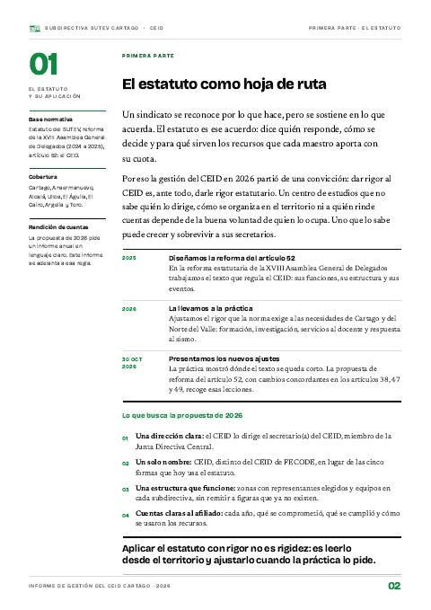
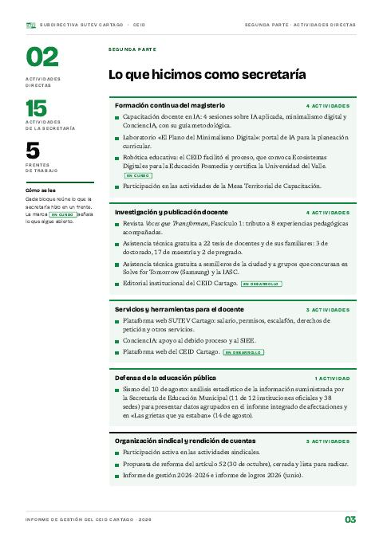
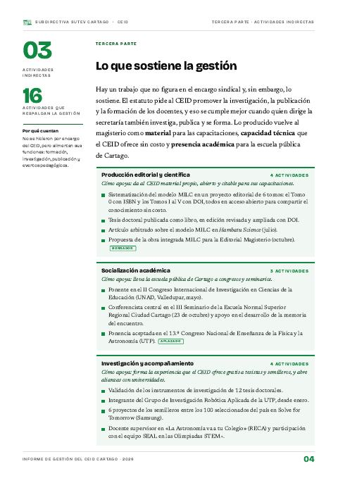
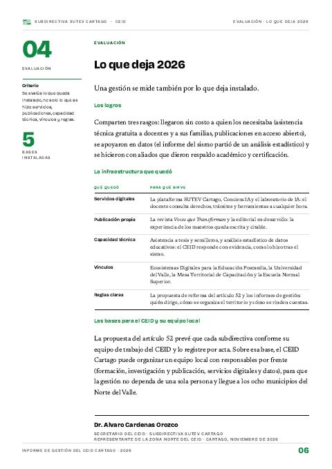

Informe de gestión del CEID Cartago 2026
El año en que el CEID se volvió infraestructura para el magisterio: 15 actividades directas, 22 investigaciones acompañadas sin costo, 38 sedes documentadas tras el sismo y cinco bases que quedan instaladas.
- 15actividades directas en cinco frentes
- 22investigaciones con asistencia técnica gratuita
- 38sedes documentadas tras el sismo
- 8municipios del Norte del Valle

Leer el informe completo
PDF · 9 págs. · 1,3 MBEn 2026 el CEID Cartago tomó el estatuto como hoja de ruta y lo convirtió en trabajo concreto para el magisterio del Norte del Valle: formación, investigación, servicios al docente y datos para defender la escuela pública. Este informe da cuenta de lo que hizo la secretaría, de lo que sostuvo esa gestión y de lo que todavía falta. Se lee completo o por partes.
Cinco frentes de trabajo
La secretaría trabajó en cinco frentes. La formación continua y la investigación concentran más de la mitad de lo hecho, porque son el corazón del encargo del artículo 52.
Fuente: Informe de gestión 2026, segunda parte (15 actividades).
Conocimiento al servicio del docente, sin costo
La asistencia técnica gratuita del CEID llegó a 22 investigaciones de docentes y de sus familias. No es una dirección formal ni da certificación: es acompañamiento para que el maestro que investiga no lo haga solo.
Fuente: Informe de gestión 2026, segunda parte.
Datos para defender la escuela pública
Tras el sismo del 10 de agosto, el CEID hizo el análisis estadístico de la información que entregó la Secretaría de Educación Municipal. Con esos datos agrupados se armaron el informe integrado de afectaciones y «Las grietas que ya estaban» (14 de agosto).
Fuente: Informe de gestión 2026, segunda parte.
- 91,7 %de las instituciones oficiales, con datos agrupados
- 38sedes documentadas
- 5.771estudiantes afectados identificados
Fuente: Informe de gestión 2026 y hoja de vida del secretario, anexa al informe.
Semilleros que llegan a la etapa nacional
La asistencia técnica gratuita también acompaña a los semilleros de la ciudad. En tres años, los proyectos que llegan a las etapas nacionales de Solve for Tomorrow (Samsung) pasaron de uno a seis.
Fuente: hoja de vida del secretario, anexa al informe (en 2026, 6 entre los 100 seleccionados de 2.383 propuestas).
Lo que deja 2026
Una gestión se mide también por lo que deja instalado. Los logros del año llegaron sin costo a quien los necesitaba, se apoyaron en datos y se hicieron con aliados que dieron respaldo académico y certificación.
- 5bases instaladas: servicios digitales, publicación propia, capacidad técnica, vínculos y reglas claras
- 5frentes que siguen en curso
- 4mejoras por hacer
Fuente: Informe de gestión 2026, tercera parte y evaluación.
El informe se lee por partes aquí abajo. El PDF completo trae, además, la hoja de vida del secretario como anexo.
En este informe
4 partes
Pág. 2 · 1 pág.El estatuto como hoja de rutaAlvaro Cardenas OrozcoUn sindicato se reconoce por lo que hace, pero se sostiene en lo que acuerda. Por eso la gestión de 2026 partió de dar rigor estatutario al CEID.Leer esta parte →
Pág. 3 · 1 pág.Lo que hicimos como secretaríaAlvaro Cardenas OrozcoQuince actividades directas en cinco frentes: formación, investigación y publicación, servicios al docente, defensa de la educación pública y organización sindical.Leer esta parte →
Pág. 4 · 2 págs.Lo que sostiene la gestiónAlvaro Cardenas OrozcoEl trabajo que no figura en el encargo sindical y, sin embargo, lo sostiene: producción editorial, socialización académica, investigación y formación. Y lo que nos falta.Leer esta parte →
Pág. 6 · 1 pág.Lo que deja 2026Alvaro Cardenas OrozcoUna gestión se mide también por lo que deja instalado: servicios digitales, publicación propia, capacidad técnica, vínculos y reglas claras.Leer esta parte →